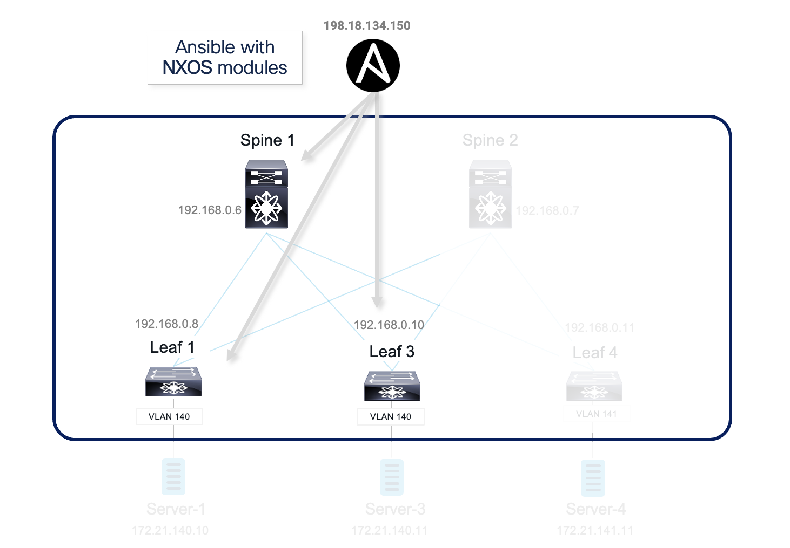
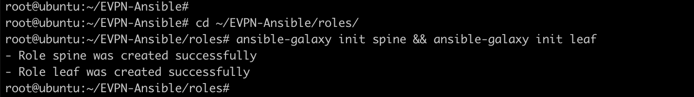
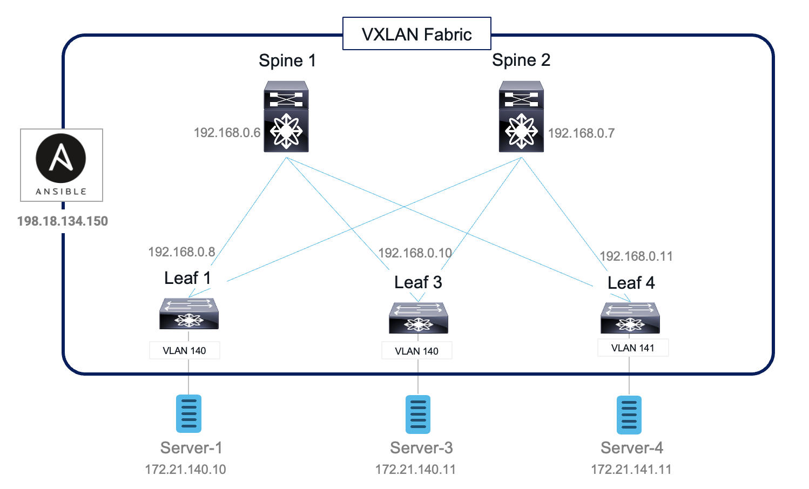

Task 4 - Config switches using Ansible NXOS modules
In this section, you will build remaining VXLAN fabric using Ansible NXOS modules. These modules will be used to configure leaf-1, leaf-3 and spine-1 switches within the VXLAN Fabric. We will configure BGP neighbors between spine and leaf switching by using Ansible NXOS modules. The following NXOS ansible modules are used:
| cisco.nxos.nxos_feature | Manage features on Nexus switches |
|---|---|
| cisco.nxos.nxos_bgp | Manage BGP config |
| cisco.nxos.nxos_bgp_neighbor | Manage BGP neighbor config |
| cisco.nxos.nxos_bgp_af | Manage BGP address-famility config |
| cisco.nxos.nxos_bgp_neighbor_af | Manage BGP neighbor address-famility config |
In comparison to Jinja2, NXOS modules are more abstract from NXOS CLI based configuration. There is no need to have knowledge of exact NXOS CLI syntax to use NXOS modules. You will follow the steps to configure BGP, Multicast, VXLAN and EVPN. In each step, you will use different Ansible NXOS modules to accomplish the step.

After each step, you can login the switches to verify configuration changes.
Step 1: Create new playbook
Again we will use roles structure to make the playbook more modular. The roles included in the new playbook are “spine” and “leaf”.
-
Switch to “Atom”, then right click on the folder
EVPN-Ansibleand create a new playbook namednxos_fabric.yml. Enter this file name and hit enter -
In the
nxos_fabric.ymlenter the content as shown below:
---
- hosts: spine
connection: local
roles:
- spine
- hosts: leaf
connection: local
roles:
- leaf
Below screenshot shows the actual content:
- Click
FileandSaveon Atom. This will save the playbook, and also scp the playbook to Ansible server using pre-configured “remote-sync” package.
Step 2: Create Spine & Leaf roles
- On the MTpuTTy, go back (or initiate a new login/SSH) to Ansible Server node (198.18.134.150). Switch to ‘roles’ directory; then create ‘spine’ and ‘leaf’ roles using ansible-galaxy as per below commands:
cd ~/EVPN-Ansible/roles/
ansible-galaxy init spine && ansible-galaxy init leaf
Below screenshot shows the output of above command:

- Switch to “Atom” and sync the new created folders between Ansible node and Remote desktop by pressing Right Click on the folder
EVPN-Ansible, then openRemote SyncselectDownload Folderas shown below:
Step 3: Spine role - tasks
“ansible-galaxy” automatically creates empty “main.yml” file under “tasks” folder. We are going to use “Atom” to edit the main.yml file.
- On Atom, open up the project folder
EVPN-Ansibleand editmain.ymlfile underroles/spine/tasks/to include following:
---
# tasks file for spine
#task to configure bgp neighbor to all leaf switches
- name: Enable BGP
cisco.nxos.nxos_feature:
feature: bgp
state: enabled
tags: bgp
- name: Configure BGP AS
cisco.nxos.nxos_bgp:
asn: "{{ asn }}"
router_id: "{{ router_id }}"
state: present
tags: bgp
- name: Configure BGP AF
cisco.nxos.nxos_bgp_af:
asn: "{{ asn }}"
afi: ipv4
safi: unicast
tags: bgp
- name: Configure iBGP neighbors
cisco.nxos.nxos_bgp_neighbor:
asn: "{{ asn }}"
neighbor: "{{ item.neighbor }}"
remote_as: "{{ item.remote_as }}"
update_source: "{{ item.update_source }}"
with_items: "{{ bgp_neighbors }}"
tags: bgp
- name: Configure iBGP neighbor AF
cisco.nxos.nxos_bgp_neighbor_af:
asn: "{{ asn }}"
neighbor: "{{ item.neighbor }}"
afi: ipv4
safi: unicast
route_reflector_client: "true"
send_community: both
with_items: "{{ bgp_neighbors }}"
tags: bgp
- Click
FileandSave. This will save the playbook, and also ftp the playbook to Ansible server using pre-configured “remote-sync” package.
In the above task/main.yml file multiple NXOS ansible modules have been used:
-
“cisco.nxos.nxos_feature” module provides the capability to manage features in NX-OS features. It is used to enable bgp as a feature in above configurations
-
“cisco.nxos.nxos_bgp” module provides the capability to manage BGP configuration in NX-OS. Here it is used to configure bgp
-
“cisco.nxos.nxos_bgp_af” module provides the capability to manage BGP Address-family configuration in NX-OS.
-
“cisco.nxos.nxos_bgp_neighbor” module is used to configure the BGP Neighbour in NX-OS.
-
“cisco.nxos.nxos_bgp_neighbor_af” module provides the capability to manage BGP Address-family Neighbour configuration in NX-OS.
Step 4: Spine role - vars
“ansible-galaxy” automatically creates empty “main.yml” file under “vars” folder. We can use “Atom” to edit the main.yml file
- Switch to Atom, then open up the project folder
EVPN-Ansiblefrom the left pane and openmain.ymlfile under “roles/spine/vars/” and enter below content:
---
# vars file for spine
asn: 65000
bgp_neighbors:
- { remote_as: 65000, neighbor: 192.168.0.8, update_source: Loopback0 }
- { remote_as: 65000, neighbor: 192.168.0.10, update_source: Loopback0 }
- { remote_as: 65000, neighbor: 192.168.0.11, update_source: Loopback0 }
- Click
FileandSave. This will save the playbook, and also ftp the playbook to Ansible server using pre-configured “remote-sync” package.
Step 5: Leaf role - tasks
“ansible-galaxy” automatically creates empty “main.yml” file under “tasks” folder. We can use “Atom” to edit the main.yml file
- On Atom, open up the project folder
EVPN-Ansibleand editmain.ymlfile underroles/leaf/tasks/to include following:
---
# tasks file for leaf
#task to configure bgp neighbor to all spine switches
- name: Enable BGP
cisco.nxos.nxos_feature:
feature: bgp
state: enabled
tags: bgp
- name: Configure BGP AS
cisco.nxos.nxos_bgp:
asn: "{{ asn }}"
router_id: "{{ router_id }}"
state: present
tags: bgp
- name: Configure BGP AF
cisco.nxos.nxos_bgp_af:
asn: "{{ asn }}"
afi: ipv4
safi: unicast
tags: bgp
- name: Configure iBGP neighbors
cisco.nxos.nxos_bgp_neighbor:
asn: "{{ asn }}"
neighbor: "{{ item.neighbor }}"
remote_as: "{{ item.remote_as }}"
update_source: "{{ item.update_source }}"
with_items: "{{ bgp_neighbors }}"
tags: bgp
- name: Configure iBGP neighbor AF
cisco.nxos.nxos_bgp_neighbor_af:
asn: "{{ asn }}"
neighbor: "{{ item.neighbor }}"
afi: ipv4
safi: unicast
send_community: both
with_items: "{{ bgp_neighbors }}"
tags: bgp
- Click
FileandSave. This will save the playbook, and also ftp the playbook to Ansible server using pre-configured “remote-sync” package.
Step 6: Leaf role - vars
“ansible-galaxy” automatically creates empty “main.yml” file under “vars” folder. We can use “Atom” to edit the main.yml file
- Switch to ATOM, then open up the project folder
EVPN-Ansiblefrom the left pane and openmain.ymlfile under “roles/leaf/vars/” and enter below content:
---
# vars file for leaf
asn: 65000
bgp_neighbors:
- { remote_as: 65000, neighbor: 192.168.0.6, update_source: Loopback0 }
- { remote_as: 65000, neighbor: 192.168.0.7, update_source: Loopback0 }
- Click
FileandSave. This will save the playbook, and also ftp the playbook to Ansible server using pre-configured “remote-sync” package.
Step 7: Execute playbook
- On the Ansible node (in MTputty SSH session), run the command (
ansible-playbook nxos_fabric.yml --tags "bgp") to execute the playbook as shown below:
cd ~/EVPN-Ansible
ansible-playbook nxos_fabric.yml --tags "bgp"
Below screenshots shows the execution of above playbook:
- After the configuration push is successful, login (on MTputty SSH session) to leaf-1, leaf-3 or spine-1 switch to verify configuration has been pushed and BGP neighbours are operational by running below command:
show ip bgp summary
The output of above command providing the BGP neighbours info on Spine-1 and Leaf-3 is shown below:

Step 8: Multicast config with Ansible NXOS modules
In this section, we will be configuring underlay multicast to support BUM traffic in the VXLAN fabric. The NXOS modules we will be using in this section are nxos_feature Manage fatures on Nexus switchs nxos_pim_interface Manage PIM interface configuration
| cisco.nxos.nxos_pim_rp_address | Manage static RP configuration |
| cisco.nxos.nxos_config | Manage NXOS arbitrary configuration command |
| cisco.nxos.nxos_interface_ospf | Manage configuration OSPF interface instance |
| cisco.nxos.nxos_interfaces | Manage physical attribute of interface |
| cisco.nxos.nxos_l3_interfaces | Manage L3 interfaces on Cisco NXOS network devices |
| cisco.nxos.nxos_pim_interface | Manages PIM interface configuration |
Edit playbook for spine role
- Use “Atom” to edit the
“main.yml”file. Open up the project folder“EVPN-Ansible”and open“main.yml”file under“roles/spine/tasks/”and save the below tasks at the end the file.
Note
Do not replace existing content
#task to enable pim and configure anycast rp for underlay multicast
- name: Enable PIM
cisco.nxos.nxos_feature:
feature: pim
state: enabled
tags: multicast
- name: Configure Anycast RP interfce
cisco.nxos.nxos_interfaces:
config:
- name: loopback1
enabled: true
tags: multicast
- name: Configure IP Address on New LP1
cisco.nxos.nxos_l3_interfaces:
config:
- name: loopback1
ipv4:
- address: "{{ loopback1 }}/32"
tags: multicast
- name: Configure PIM int
cisco.nxos.nxos_pim_interface:
interface: "{{ item.interface }}"
sparse: true
with_items: "{{L3_interfaces}}"
tags: multicast
- name: Enable OSPF on New LP1
cisco.nxos.nxos_ospf_interfaces:
config:
- name: loopback1
address_family:
- afi: ipv4
processes:
- process_id: "1"
area:
area_id: 0.0.0.0
tags: multicast
- name: Configure PIM RP
cisco.nxos.nxos_pim_rp_address:
rp_address: "{{ loopback1 }}"
tags: multicast
- name: Configure Anycast RP
cisco.nxos.nxos_config:
lines:
- "ip pim anycast-rp {{ loopback1 }} {{ s1_loopback }}"
- "ip pim anycast-rp {{ loopback1 }} {{ s2_loopback }}"
tags: multicast
- Click
FileandSave. This will save the playbook, and also ftp the playbook to Ansible server using pre-configured “remote-sync” package.
Edit variable file for Spine role
- Use “Atom” to edit the variables file for Spine i.e.
“main.yml”file. Open up the project folder“EVPN-Ansible”and add the below content at the end of“main.yml”file under“roles/spine/vars/”
Note
Do not replace existing content.
L3_interfaces:
- { interface: Ethernet1/1 }
- { interface: Ethernet1/2 }
- { interface: Ethernet1/3 }
- { interface: Ethernet1/4 }
- { interface: loopback0 }
- { interface: loopback1 }
s1_loopback: 192.168.0.6
s2_loopback: 192.168.0.7
- Click
FileandSave. This will save the playbook, and also ftp the playbook to Ansible server using pre-configured “remote-sync” package.
Edit playbook for leaf role
- use “Atom” to edit the
“main.yml”file. Open up the project folder“EVPN-Ansible”and add below content at the end of“main.yml”file under“roles/leaf/tasks/”.
Note
Do not replace existing content.
- On Atom, Make sure to click
File->Saveafter entering the below data in this file so it is pushed to Ansible server:
#task to enable PIM for underlay multicast
- name: Enable PIM
cisco.nxos.nxos_feature:
feature: pim
state: enabled
tags: multicast
- name: Configure PIM int
cisco.nxos.nxos_pim_interface:
interface: "{{ item.interface }}"
sparse: true
with_items: "{{L3_interfaces}}"
tags: multicast
- name: Configure PIM RP
cisco.nxos.nxos_pim_rp_address:
rp_address: "{{ rp_address }}"
tags: multicast
- Click
FileandSave. This will save the playbook, and also ftp the playbook to Ansible server using pre-configured “remote-sync” package.
Edit variable file for leaf role
- Use “Atom” to edit the main.yml file. Open up the project folder “EVPN-Ansible” and add below content at the end of “main.yml” file under “roles/leaf/vars/”. On Atom, Make sure to click File->Save after entering the below data in this file so it is pushed to Ansible server:
rp_address: 192.168.0.100
L3_interfaces:
- { interface: Ethernet1/1 }
- { interface: Ethernet1/2 }
- { interface: loopback0 }
- { interface: loopback1 }
- Click
FileandSave. This will save the playbook, and also ftp the playbook to Ansible server using pre-configured “remote-sync” package.
Run the playbook and verify configuration changes
- Execute the playbook by running
ansible-playbook nxos_fabric.yml --tags "multicast"command on Ansible server as shown below :
ansible-playbook nxos_fabric.yml --tags "multicast"
Below screenshots shows the output of above command:
-
login to any leaf (leaf1, leaf3, leaf4) or Spine-1 switch (via SSH using MTPutty) to verify multicast configuration and PIM neighbors by executing command:
show ip pim neighbor -
Below screenshot shows the output of above command (
show ip pim neighbor) from Spine-1:
This confirms Multicast has been enabled using Ansible modules
Step 9: VXLAN config with Ansible NXOS modules
In this section, we will be configuring VXLAN on leaf and spine switches. The NXOS modules we will be using in this section are
| nxos_feature | Manages features on Nexus switches |
| cisco.nxos.nxos_evpn_global | Handles EVPN control plane for VXLAN |
| cisco.nxos.nxos_vlan | Manages VLAN resources and attributes |
| cisco.nxos.nxos_vrf | Manages global VRF configuration |
| cisco.nxos.nxos_vrf_af | Manages VRF address falimily |
| cisco.nxos.nxos_overlay_global | Configuration anycast gateway MAC |
| cisco.nxos.nxos_vxlan_vtep | Manages VXLAN Network Virtualization Endpoint |
| cisco.nxos.nxos_vxlan_vtep_vni | Creates Virtual Network Identifier member |
Edit playbook for spine role
- Use “Atom” to edit the “main.yml” file. Open up the project folder “EVPN-Ansible” and open “main.yml” file under “roles/spine/tasks/” and enter the below content (you may copy & paste with correct spaces) at the end of the file
Note
Do not replace existing content
#task to configure vxlan fabric
- name: Enable VXLAN Feature
cisco.nxos.nxos_feature:
feature: "{{item}}"
# provider: "{{cisco.nxos.nxos_provider }}"
state: enabled
with_items:
- nv overlay
- vn-segment-vlan-based
tags: vxlan
- name: Enable NV Overlay
cisco.nxos.nxos_evpn_global:
nv_overlay_evpn: true
tags: vxlan
- Click
FileandSave. This will save the playbook, and also ftp the playbook to Ansible server using pre-configured “remote-sync” package.
Edit variable file for Spine role
No new variable required for Spine
Edit playbook for leaf role
- use “Atom” to edit the main.yml file. Open up the project folder “EVPN-Ansible” and open “main.yml” file under “roles/leaf/tasks/”. Add the below content in the file at the end of the file (i.e., in addition to existing content), and then make sure to click “File”->“Save” on Atom, so that the updated file is pushed to Ansible server.
#task to configure VXLAN fabric
- name: Enable VXLAN Feature
cisco.nxos.nxos_feature:
feature: "{{ item }}"
state: enabled
with_items:
- nv overlay
- vn-segment-vlan-based
tags: vxlan
- name: Enable VXLAN Feature
cisco.nxos.nxos_feature:
feature: "{{ item }}"
state: enabled
with_items:
- nv overlay
- vn-segment-vlan-based
tags: vxlan
- name: Enable NV Overlay
cisco.nxos.nxos_evpn_global:
nv_overlay_evpn: true
tags: vxlan
- name: Configure VLAN to VNI
cisco.nxos.nxos_vlans:
config:
- vlan_id: "{{ item.vlan_id }}"
mapped_vni: "{{ item.vni }}"
name: "{{ item.vlan_name }}"
with_items:
- "{{ L2VNI }}"
- "{{ L3VNI }}"
tags: vxlan
- name: Configure Tenant VRF
cisco.nxos.nxos_vrf:
vrf: Tenant-1
rd: auto
vni: "{{ L3VNI[0].vni }}"
tags: vxlan
- name: Configure VRF AF
cisco.nxos.nxos_vrf_af:
vrf: Tenant-1
route_target_both_auto_evpn: true
afi: ipv4
tags: vxlan
- name: Configure Anycast GW
cisco.nxos.nxos_overlay_global:
anycast_gateway_mac: 0000.2222.3333
tags: vxlan
- name: Configure L2VNI
cisco.nxos.nxos_interfaces:
config:
- name: vlan"{{ item.vlan_id }}"
fabric_forwarding_anycast_gateway: true
with_items: "{{ L2VNI }}"
tags: vxlan
- name: Configure L3VNI
cisco.nxos.nxos_interfaces:
config:
- name: vlan"{{ L3VNI[0].vlan_id }}"
ip_forward: true
tags: vxlan
- name: No shut VLAN
cisco.nxos.nxos_config:
lines:
- no shutdown
parents: interface vlan{{ item.vlan_id }}
with_items:
- "{{ L2VNI }}"
- "{{ L3VNI }}"
tags: vxlan
- name: Assign interface to Tenant VRF
cisco.nxos.nxos_vrf_interface:
vrf: Tenant-1
interface: "vlan{{ item.vlan_id }}"
with_items:
- "{{ L2VNI }}"
- "{{ L3VNI }}"
tags: vxlan
- name: Configure SVI IP
cisco.nxos.nxos_l3_interfaces:
config:
- name: "vlan{{ item.vlan_id }}"
ipv4:
- address: "{{ item.ip_add }}/{{ item.mask }}"
with_items: "{{ L2VNI }}"
tags: vxlan
- name: Configure VTEP Tunnel
cisco.nxos.nxos_vxlan_vtep:
interface: nve1
shutdown: "false"
source_interface: Loopback1
host_reachability: "true"
tags: vxlan
- name: Configure L2VNI to VTEP
cisco.nxos.nxos_vxlan_vtep_vni:
interface: nve1
vni: "{{ item.vni }}"
multicast_group: "{{ item.mcast }}"
with_items: "{{ L2VNI }}"
tags: vxlan
- name: Configure L3VNI to VTEP
cisco.nxos.nxos_vxlan_vtep_vni:
interface: nve1
vni: "{{ L3VNI[0].vni }}"
assoc_vrf: true
tags: vxlan
- Click
FileandSave. This will save the playbook, and also ftp the playbook to Ansible server using pre-configured “remote-sync” package.
Edit variable file for leaf role
- Use “Atom” to edit the
main.ymlfile. Open up the project folderEVPN-Ansibleand openmain.ymlfile underroles/leaf/vars/. Add the below content in the file at the end of the file and then make sure to click“File” -> “Save”on Atom, so that the updated file is pushed to Ansible server
Note
Do not replace existing content. Below contents must be added at the end of the file.
L2VNI:
- { vlan_id: 140, vni: 50140, ip_add: 172.21.140.1, mask: 24, vlan_name: L2-VNI-140-Tenant1, mcast: 239.0.0.140 }
- { vlan_id: 141, vni: 50141, ip_add: 172.21.141.1, mask: 24, vlan_name: L2-VNI-141-Tenant1, mcast: 239.0.0.141 }
L3VNI:
- { vlan_id: 999, vlan_name: L3-VNI-999-Tenant1, vni: 50999 }
- Click
FileandSave. This will save the playbook, and also ftp the playbook to Ansible server using pre-configured “remote-sync” package.
Run the playbook and verify configuration changes
- On Ansible server (via SSH connection on MTputty), run the below command:
ansible-playbook nxos_fabric.yml --tags "vxlan"
-
Below screenshot show partial output of above command:
-
After finishing this task: login to any leaf switch (on MTPutty) to verify VXLAN configuration and the VNI by issuing the command:
show nve vni
Below screenshot shows the output of above command from Leaf-3:

Step 10: EVPN config with Ansible NXOS modules
In this section, we will be configuring BGP EVPN on leaf and spine switches. The NXOS modules we will be using in this section are:
| cisco.nxos.nxos_bgp_af | Manage BGP address-famility config |
| cisco.nxos.nxos_bgp_neighbor_af | Manage BGP neighbor address-famility config |
| cisco.nxos.nxos_evpn_vni | Manage Cisco EVPN VXLAN Network Identifier |
Edit playbook for spine role
- Use “Atom” to edit the
main.ymlfile. Open up the project folder“EVPN-Ansible”and openmain.ymlfile under“roles/spine/tasks/”. Add the below content in the file in addition to existing content. - Then make sure to click
“File”->“Save”on Atom, so that the updated file is pushed to Ansible server.
# task to configure BGP EVPN
- name: Configure BGP EVPN
cisco.nxos.nxos_bgp_af:
asn: "{{ asn }}"
afi: l2vpn
safi: evpn
tags: evpn
- name: Configure iBGP neighbor EVPN AF
cisco.nxos.nxos_bgp_neighbor_af:
asn: "{{ asn }}"
neighbor: "{{ item.neighbor }}"
afi: l2vpn
safi: evpn
route_reflector_client: "true"
send_community: both
with_items: "{{ bgp_neighbors }}"
tags: evpn
Edit variable file for Spine role
No new variables required for Spine
Edit playbook for leaf role
- use “Atom” to edit the
main.ymlfile. Open up the project folderEVPN-Ansibleand openmain.ymlfile under“roles/leaf/tasks/”. Add the below content in the file in addition to existing content. - Then make sure to click
“File”->“Save”on Atom, so that the updated file is pushed to Ansible server.
#task to configure BGP EVPN
- name: Configure BGP EVPN
cisco.nxos.nxos_bgp_af:
asn: "{{ asn }}"
afi: l2vpn
safi: evpn
tags: evpn
- name: Configure iBGP neighbor EVPN AF
cisco.nxos.nxos_bgp_neighbor_af:
asn: "{{ asn }}"
neighbor: "{{ item.neighbor }}"
afi: l2vpn
safi: evpn
send_community: both
with_items: "{{ bgp_neighbors }}"
tags: evpn
- name: Configure L2VNI RD/RT
cisco.nxos.nxos_evpn_vni:
vni: "{{ item.vni }}"
route_distinguisher: auto
route_target_both: auto
with_items: "{{ L2VNI }}"
tags: evpn
- Click
FileandSave. This will save the playbook, and also ftp the playbook to Ansible server using pre-configured “remote-sync” package.
Edit variable file for leaf role
No new variables required for Leaf
Run the playbook and verify configuration changes
- On the Ansible server (using MTPutty) run this playbook by running the command
ansible-playbook nxos_fabric.yml --tags "evpn"as shown below:
ansible-playbook nxos_fabric.yml --tags "evpn"
Below screenshot shows the output of above playbook:
- After successful execution of the playbook: login to any leaf or spine switch to verify BGP EVPN configuration and evpn neighbor by issuing command:
show bgp l2vpn evpn summary
Below screenshot shows the output of above command from leaf-3 switch. As expected it shows the spine-1 and spine-2 as neighbors:

Step 11: Run nxos_fabric playbook
- Up to this point, you have run the playbook for each step separately (using tags). You could re-run the whole playbook without giving any tags, but no new changes should be maded to the switches.
ansible-playbook nxos_fabric.yml
Step 12: Verify end-to-end IP connectivity
Now Let’s verify the VXLAN bridging and VXLAN routing from servers that are pre-configured in following VLANs and IPs
| Server Name | Connect to switch | In VLAN | IP of server |
|---|---|---|---|
| Server-1 | Leaf-1 | 140 | 172.21.140.10 |
| Server-3 | Leaf-3 | 140 | 172.21.140.11 |
| Server-4 | Leaf-4 | 141 | 172.21.141.11 |
Below figure shows the topology & connectivity of servers to Leaf switches and their respective IP addresses:

-
Switch to MTPuTTY and SSH to
server-1. If prompted enter the credentials ofrootandC1sco12345 -
Ping default gateway from server-1 by issuing command
ping 172.21.140.1 -c 5as shown below:
[root@server-1 ~]# ping 172.21.140.1 -c 5
PING 172.21.140.1 (172.21.140.1) 56(84) bytes of data.
64 bytes from 172.21.140.1: icmp_seq=2 ttl=255 time=15.7 ms
64 bytes from 172.21.140.1: icmp_seq=3 ttl=255 time=4.11 ms
- Next, Ping server 3 and server 4 from server-1 (in same VLAN and inter-VLAN respectively) by using
ping 172.21.140.11 -c 5andping 172.21.141.11 -c 5commands as shown below:
[[root@server-1 ~]# ping 172.21.140.11 -c 5
PING 172.21.140.11 (172.21.140.11) 56(84) bytes of data.
64 bytes from 172.21.140.11: icmp_seq=1 ttl=64 time=1032 ms
64 bytes from 172.21.140.11: icmp_seq=2 ttl=64 time=35.7 ms
64 bytes from 172.21.140.11: icmp_seq=3 ttl=64 time=14.4 ms
^C
--- 172.21.140.11 ping statistics ---
3 packets transmitted, 3 received, 0% packet loss, time 2112ms
rtt min/avg/max/mdev = 14.431/360.839/1032.335/474.899 ms, pipe 2
[root@server-1 ~]# ping 172.21.141.11 -c 5
PING 172.21.141.11 (172.21.141.11) 56(84) bytes of data.
64 bytes from 172.21.141.11: icmp_seq=994 ttl=62 time=30.2 ms
64 bytes from 172.21.141.11: icmp_seq=995 ttl=62 time=16.1 ms
64 bytes from 172.21.141.11: icmp_seq=996 ttl=62 time=18.0 ms
Congratulation! You have successfully built VXLAN fabric using ansible + Jinja2 template and ansible + NXOS modules.